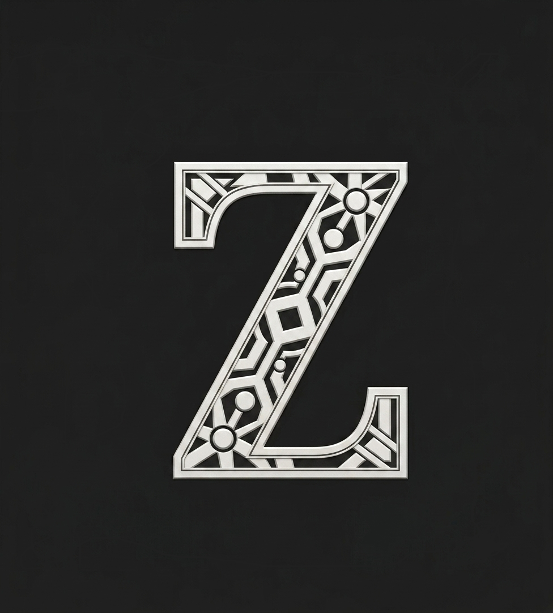

¿Cuánto falta para Navidad?
Para el 25 de Diciembre de 2026
El Launcher Definitivo para
PvP y
Rendimiento
para |
Juega Minecraft con la máxima fluidez, cero lag y 64 MB de consumo de RAM. Soporte completo de mods (Forge/Fabric), personalización total con .GSS, reproductor de música en segundo plano y multicuenta instantánea.

Características Principales
Descubre por qué GLauncher es la opción más rápida, ligera y personalizable para jugar Minecraft.

Personalización Máxima con .GSS
Personalización .GSS
Temas visuales, estilos y HUD a tu gusto con GLauncher StyleSheet.
Soporte de Mods
Compatibilidad total con Forge, Fabric, Quilt y NeoForge.
Consumo Ligero (64MB)
Optimización extrema de memoria RAM para PCs y laptops de bajos recursos.
Multi-Cuenta
Cambio rápido entre cuentas de Microsoft y No-Premium.
GMusic & Audio
Música integrada en segundo plano sin ralentizar tu juego.
Chat Global & Amigos
Salas de chat en tiempo real y sistema social de amigos.
Interfaz Modular
Diseño limpio y moderno pensado para la mejor experiencia de usuario.
Nuestra Comparativa
Analizamos los launchers más populares del mercado frente a GLauncher. Calidad, seguridad y rendimiento sin compromisos.
| Característica |
Recomendado
GLauncher
|
TLauncher | Prism Launcher | Lunar Client |
|---|---|---|---|---|
| Personalización Visual | .GSS v7.0 (Total y Gratuita) | Muy Limitada | Solo interfaz básica | Temas de pago |
| Consumo de Memoria RAM | Solo 64 MB (Ultra Ligero) | 350 MB - 500 MB | ~200 MB | 400 MB+ |
| Rendimiento & FPS | Máximo (Optimización PvP) | Estándar | Muy Bueno | Alto |
| Seguridad & Privacidad | 100% Limpio (Sin Spyware) | Dudosa (Adware/Spyware) | Código Abierto | Privativo Seguro |
| Soporte de Modloaders | Forge, Fabric, NeoForge, Quilt | Forge, Fabric, OptiFine | Todos los loaders | Solo mods internos |
| Cuentas Soportadas | Microsoft y No-Premium | No-Premium y Mojang | Requiere configuración | Solo Microsoft Premium |
| Música Integrada (GMusic) | Sí (YouTube en 2° plano sin lag) | No disponible | No disponible | No disponible |
| Chat Global y Amigos | GChat + Amigos en tiempo real | No | No | Lunar Friends |
| Compatibilidad x86 / Canaimas | Sí (Nativo 32-bit y 64-bit) | Sí | Sí | Solo 64-bit |
| Publicidad Molesta | 0% Anuncios (Limpio) | Anuncios intrusivos | Sin Anuncios | Tienda integrada |
Sobre el Proyecto

◈𝐙𝐘𝐑𝐎𝐕𝐄𝐍𝐓◈
Lead Developer & UI Designer
Apasionado por Minecraft, optimización y diseño de software. Creando la mejor plataforma libre para la comunidad de jugadores.
Nuestra Misión
Proporcionar a la comunidad hispanohablante un launcher de Minecraft gratuito, seguro y ultra optimizado, eliminando las barreras de entrada para jugadores con equipos de bajos recursos.
Visión
Ser el estándar de launchers PvP y supervivencia, fomentando una comunidad limpia, sin pay-to-win y con libertad total de personalización visual.
Preguntas Frecuentes
Resolvemos todas tus dudas sobre GLauncher, instalación, seguridad y personalización.
GLauncher es un launcher de Minecraft de alto rendimiento construido con Node.js y Electron. A diferencia de otros launchers pesados, consume tan solo 64 MB de memoria RAM, incluye el motor de personalización .GSS v7.0, reproductor de música GMusic sin pérdida de FPS, y chat global en tiempo real.
El proyecto es desarrollado y mantenido por ◈𝐙𝐘𝐑𝐎𝐕𝐄𝐍𝐓◈, desarrollador de software y diseñador de interfaz. Puedes seguir las novedades y tutoriales en su canal oficial de YouTube.
.GSS (GLauncher StyleSheet v7.0) es una tecnología basada en CSS que permite modificar la apariencia visual del launcher al 100%: colores neón, animaciones, tipografías personalizadas y fondos dinámicos. Puedes consultar la guía completa y ejemplos en la sección de Documentación para Desarrolladores.
Totalmente seguro. GLauncher no contiene spyware, malware, mineros ocultos ni adware comercial. El código está auditado y optimizado para proteger las credenciales y datos de cada jugador.
Sí. GLauncher soporta tanto cuentas oficiales de Microsoft (Premium) como cuentas No-Premium. Podrás elegir tu nombre de usuario, cambiar de skin y saltar a tus servidores favoritos al instante.
¡Absolutamente! GLauncher fue optimizado especialmente para funcionar sin errores en procesadores x86 (32 bits) y x64 (64 bits), permitiendo jugar fluidamente en laptops Canaima, netbooks de oficina y ordenadores antiguos con 2 GB o 4 GB de RAM.
GLauncher incluye selector automático de modloaders: Forge, Fabric, NeoForge y Quilt. Simplemente selecciona la versión que deseas y coloca tus archivos .jar en la carpeta de mods generada.
Puedes escribirnos directamente a nuestro correo de soporte glauncherforminecraft@gmail.com, contactar por teléfono/WhatsApp al 0424-7200506 o dejar tu comentario en el canal de YouTube de ◈𝐙𝐘𝐑𝐎𝐕𝐄𝐍𝐓◈.